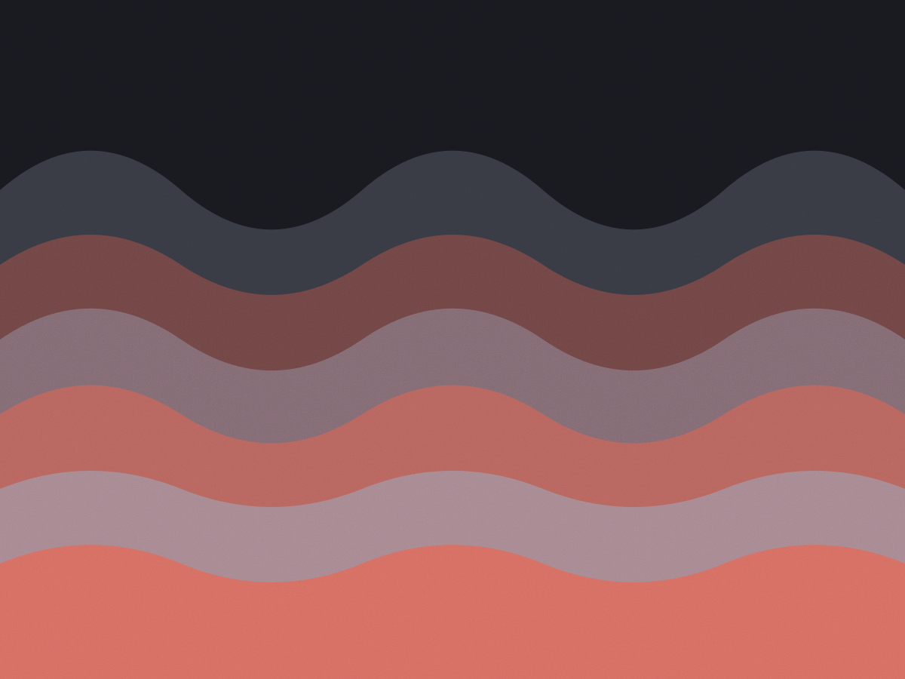

Vila Leopoldina · estúdio de 40 m²
Mix e master
com a cadeia
de sinal aberta
Você recebe o projeto aberto, o antes e depois em WAV e o loudness medido em LUFS integrado e short-term. Se o master fechou em −9 e você quer menos compressão, é uma sessão de ajuste — não um trabalho novo.
Ver preços por faixa
Por faixa, com prazo declarado
Preço por faixa até 6 minutos. Faixa mais longa ou com muitas tomadas entra com acréscimo combinado antes de começar.
-
Master
R$ 350/faixa
Equalização, compressão e limiter. Entrega em 24 e 16 bits, mais o relatório de loudness. Duas revisões incluídas.
2 dias úteis
-
Mix
R$ 900/faixa
Até 32 trilhas. Edição de tempo, automação e correção de afinação quando pedido. Entrega stems e sessão aberta.
4 dias úteis
-
Mix + master
R$ 1.100/faixa
Os dois no mesmo pacote, com a referência do artista e de duas faixas do gênero escolhidas na primeira conversa.
5 dias úteis
-
Produção
R$ 2.400/dia
Oito horas de estúdio com banda completa, técnico de gravação e organização das tomadas no fim do dia.
agenda em 7 dias
Três trabalhos recentes
-
2024
Fita Bruta — Segundo Andar
Nove faixas, mix e master. Banda de cinco pessoas gravada ao vivo em duas sessões, com correção mínima de tempo para manter a levada.
-
2023
Nina Rocha — Casa Torta
EP de cinco faixas, produção e mix. Violão e voz gravados na sala viva e o resto programado em casa, trazido em Ableton.
-
2024
Coral Falso — Meia Noite
Single, só master. A mixagem chegou pronta de outro estúdio e precisava de controle de graves — a sala seca ajudou a decidir.
A sala
Quarenta metros quadrados, divididos em sala seca para voz e instrumento e sala viva para banda. Tratamento acústico medido em 2022, com correção de sala no monitor.
- Monitores
- Par de 8 polegadas com correção de sala por medição, mais um par pequeno para conferir
- Pré-amplificadores
- Dois canais valvulados e quatro canais limpos
- Conversão
- 24 bits / 96 kHz na entrada, entrega em 48 kHz
- Software
- Pro Tools para gravação, Ableton para produção. Projeto entregue no formato que você usa
“Recebi a sessão aberta e o relatório de loudness. Nunca tinha visto um estúdio entregar o número junto com a faixa.”
“Pedi menos compressão no segundo master. Ele mandou as duas versões lado a lado e me deixou escolher.”
Orçar uma faixa
Mande o link da demo e o prazo que você tem em mente. Respondo com o preço, o dia de entrega e se a sala está livre.
- Estúdio
- Rua Carlos Weber, 1.190 — Vila Leopoldina, São Paulo
- Telefone
- (11) 93388-7712
- teo@teomartins.audio
- Horário
- Seg a sáb, 10h às 22h